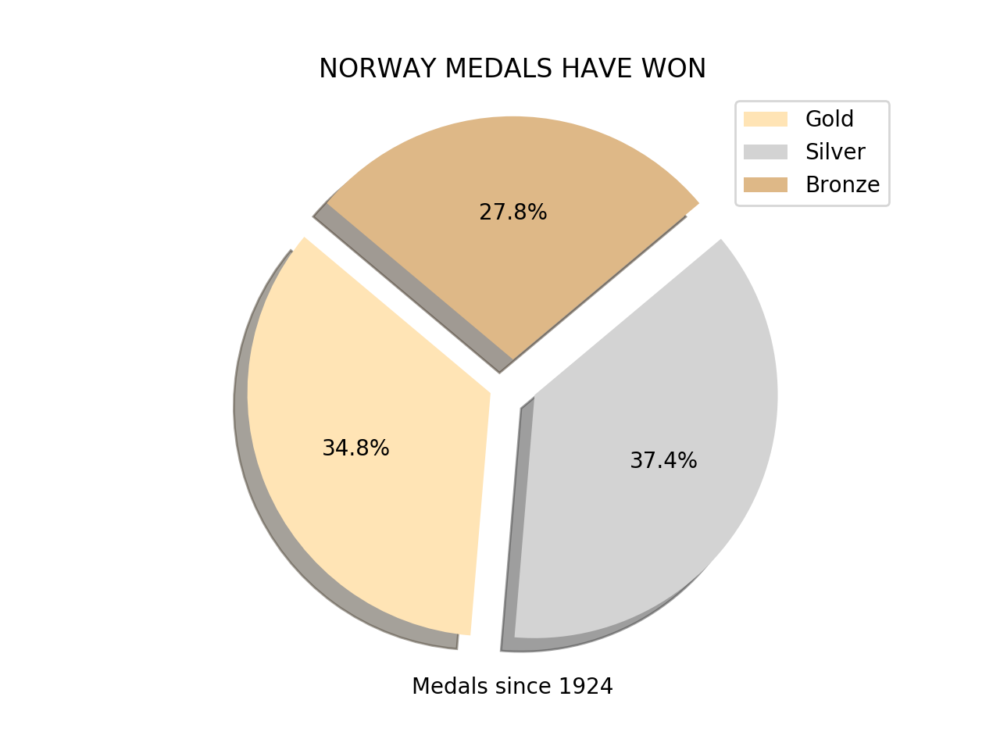

First Data Analysis
The chart shows silver medals won in Germany, Finland, and Italy from 1942, 1948, and 1972. The most high silver medals are in Germany 36.5% and the most low silver medals are in Italy 19.5%. Germany, Finland and Italy played sports: biathlon, skating, skiing and bobsleigh.
Second Data Analysis
Finland medals have won since 1924, Bronze medal is the high number 50.9% than gold and silver. Olympics athletes from Finland played skiing, biathlon, and ice hockey,
Third Data Analysis
The chart of Norway medals show, silver and gold medals are the high numbers 37.4% and 34.8% than bronze. Olympics athletes from Finland played skiing, skating, biathlon, curling. Norway medals has won since 1924
Fourth Data Analysis
The chart above show us the number of medals won by USA. The number of gold medals (167), since 1924, is the biggest when comparing with gold medals won by Canada (315) - that the second favourite team of the world in that kind of competitions. Still comparing with the same country, USA won 319 silver medals, at the same period (since 1924), while Canada won 203 silver medals. Almost tide, the number of bronze medals won by Canada was 107 comparing with the 167 bronze medals won by EUA.
Fifth Data Analysis
The chart show us the number of gold medals won by three main countries: USA, Canada and Norway. When we comparing the three ones with the three last winners we can see a huge difference between that countries. While the percentage of gold medals won in the years 1924, 1928 and 2014, respectively was USA (49,1%), Canada (26,1%) and Norway (24,8%), the tree last countries was: PRK (0%), NZL (0%) and UZB (1%).
Sixth Data Analysis
The number of bronze medals during the Olympic Games in the years 1924, 1928 and 2014 was the best of them. At these three years, these three countries won, together, 56 bronze medals. When comparing with FIN, GER and SUI, that together won 78 bronze medals at the same period, the USA, Canada and Norway lost the title of the winners..